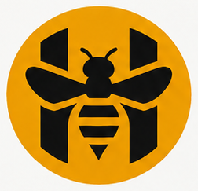
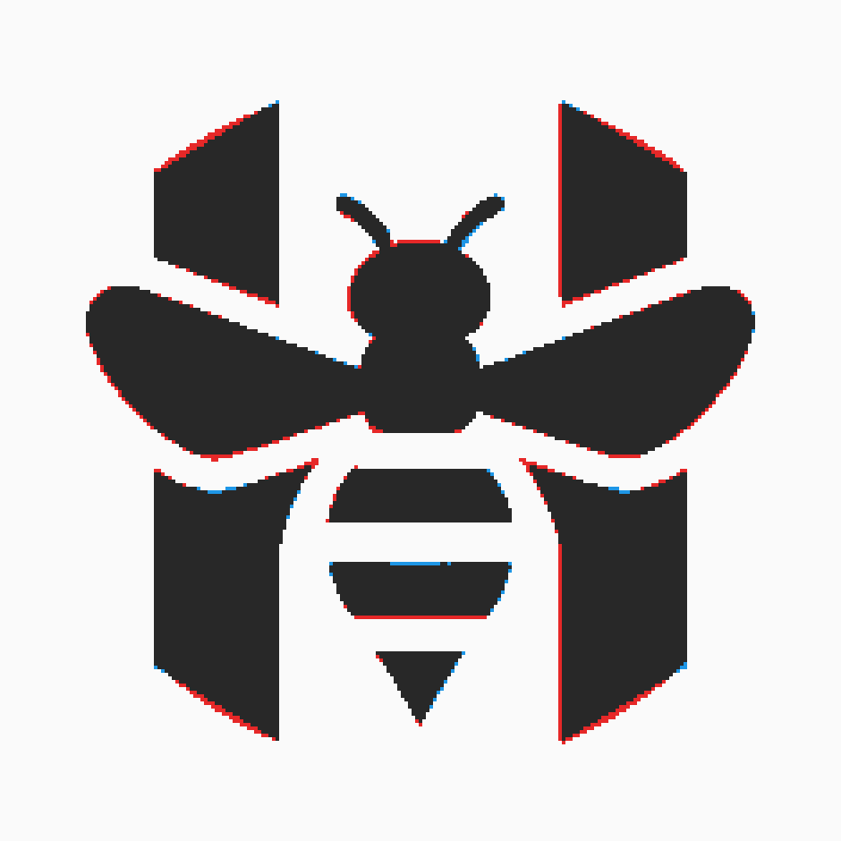
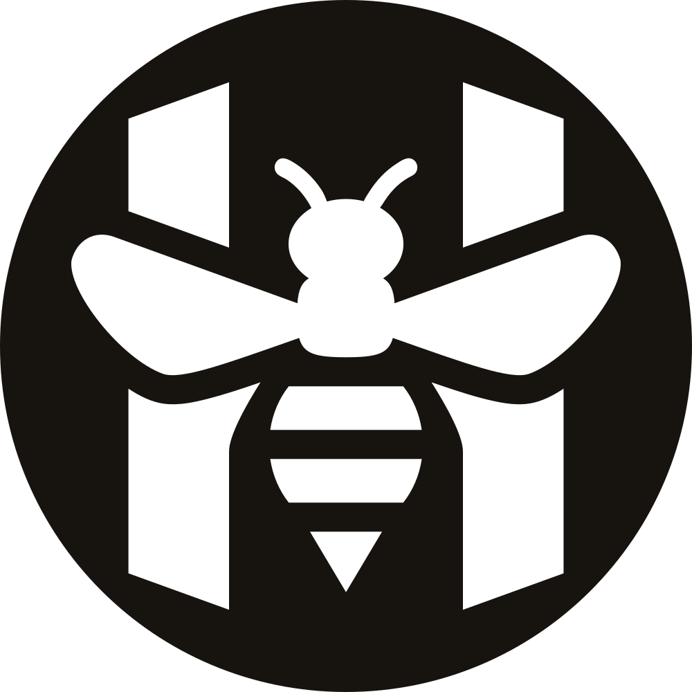
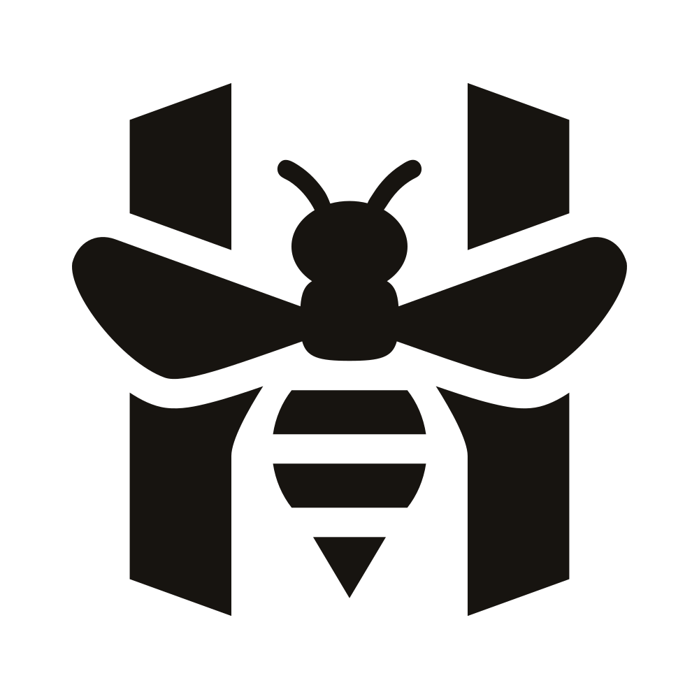
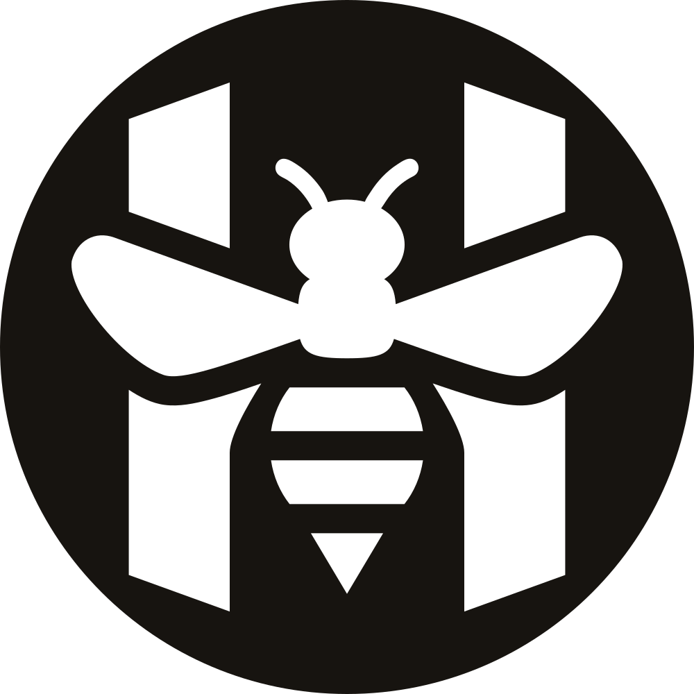
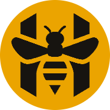
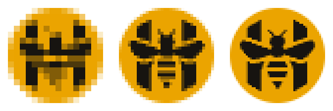
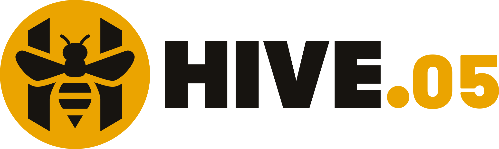
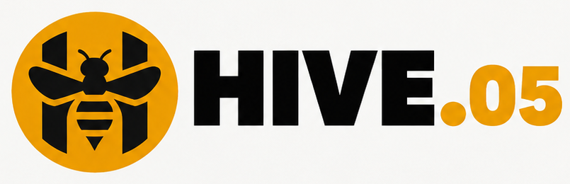

Logo HIVE, vẽ lại
Dựng lại từ số đo trên ảnh ChatGPT, không vẽ bằng mắt: mỗi mép được đo theo từng hàng điểm ảnh, rồi dựng bằng hình học đối xứng và xuất ra vector sạch. Hình chồng lên ảnh gốc trùng 95,6% phần mực — phần còn lại là viền một điểm ảnh do ảnh gốc mờ.
Gốc và bản vẽ lại


Bốn bản màu và một bản một màu
Cùng một hình, chỉ đổi màu — như hàng thứ hai của bảng ChatGPT. Bản khoét là một đường duy nhất (đĩa trừ hình), dùng cho con dấu, thêu, in một màu trên nền bất kỳ.



Cỡ nhỏ
Cỡ thật 16 · 32 · 48 · 64 · 180, rồi 16/32/48 phóng to từng điểm ảnh. Ở 32 px trở lên còn thấy rõ H và con ong; ở 16 px con ong nhoè thành khối, chỉ còn đọc được khung chữ H trên đĩa mật ong.


Lockup HIVE.05
Chữ HIVE dựng hình học theo số đo; ".05" đặt bằng Barlow Black — font mở (OFL) gần nhất với chữ số trong ảnh, để app gõ được số của Số đang mở. Bên dưới là ảnh gốc để so.


Đã sửa so với ảnh ChatGPT
- Đĩa tròn thật. Ảnh gốc vẽ đĩa 235 × 227 điểm ảnh (dẹt 3,3%); mọi đĩa khác trên bảng đều tròn, nên cả hình được nắn về tròn.
- Đối xứng tuyệt đối. Ảnh gốc lệch trục 1–2 điểm ảnh; bản vẽ lại là một nửa lật sang nửa kia.
- Góc vát thân H: 30° cho cả đầu lẫn chân (ảnh gốc 28° và 32°).
- Khe đều: khe mật ong quanh cánh 40, sọc bụng 44 (trên thang đĩa bán kính 500).
- Mép trong thân H ôm bụng theo đường cong đo được, nhập êm vào thân thẳng — không còn bậc.
- Chữ HIVE căn giữa đĩa (ảnh gốc lệch lên 2,7%). Màu dùng đúng mã của app: mật ong
#EBA400, đen#171410.
Tệp
Vector ở prototype/name/logo/: hive-mark.svg, hive-mark-black.svg,
hive-mark-negative.svg, hive-mark-knockout.svg, hive-wordmark.svg, hive-lockup.svg.
PNG nền trong suốt ở prototype/name/logo/png/: mark 16 · 32 · 48 · 64 · 180 · 512 · 1024, các bản màu 512, lockup 1640,
wordmark 800. Chưa có gì trong app thay đổi.